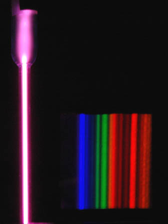

Atomic Spectra
|  |
|


At left above is the spectral tube, excited by a 5000 volt transformer. At right is the spectrum seen through a 600 lines/mm diffraction grating.
Atomic Spectra
At left above is the spectral tube, excited by a 5000 volt transformer. At right is the spectrum seen through a 600 lines/mm diffraction grating. |
Index | ||||||||||||||||||
| HyperPhysics***** Quantum Physics | Go Back |
Atomic Spectra
The iodine spectrum spreads throughout the visible colors with multiple bands that are barely resolvable at this resolution. |
Index Reference Jenkins & White Ch. 21 | ||||||||||||||||
| HyperPhysics***** Quantum Physics | Go Back |